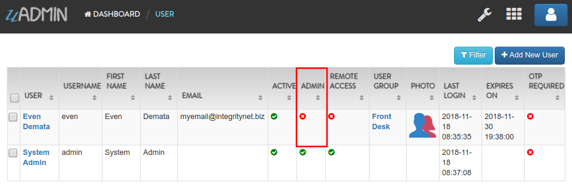
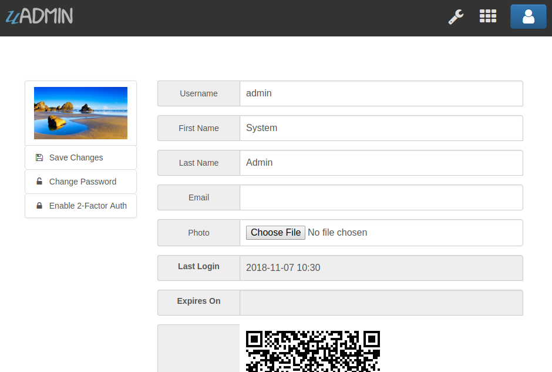

API Reference¶
Here are all public functions in the uAdmin, their syntax, and how to use them in the project.
- uadmin.Action
- uadmin.AdminPage
- uadmin.All
- uadmin.BindIP
- uadmin.Choice
- uadmin.ClearDB
- uadmin.CookieTimeout
- uadmin.Count
- uadmin.CustomTranslation
- uadmin.DashboardMenu
- uadmin.Database
- uadmin.DBSettings
- uadmin.DEBUG
- uadmin.DebugDB
- uadmin.Delete
- uadmin.DeleteList
- uadmin.EmailFrom
- uadmin.EmailPassword
- uadmin.EmailSMTPServer
- uadmin.EmailSMTPServerPort
- uadmin.EmailUsername
- uadmin.ERROR
- uadmin.F
- uadmin.Filter
- uadmin.FilterBuilder
- uadmin.GenerateBase32
- uadmin.GenerateBase64
- uadmin.Get
- uadmin.GetDB
- uadmin.GetID
- uadmin.GetString
- uadmin.GetUserFromRequest
- uadmin.GroupPermission
- uadmin.HideInDashboarder
- uadmin.INFO
- uadmin.IsAuthenticated
- uadmin.JSONMarshal
- uadmin.Language
- uadmin.Log
- uadmin.Login
- uadmin.Login2FA
- uadmin.Logout
- uadmin.MaxImageHeight
- uadmin.MaxImageWidth
- uadmin.MaxUploadFileSize
- uadmin.Model
- uadmin.ModelSchema
- uadmin.MongoDB
- uadmin.MongoModel
- uadmin.MongoSettings
- uadmin.NewModel
- uadmin.NewModelArray
- uadmin.OK
- uadmin.OTPAlgorithm
- uadmin.OTPDigits
- uadmin.OTPPeriod
- uadmin.OTPSkew
- uadmin.PageLength
- uadmin.Port
- uadmin.Preload
- uadmin.PublicMedia
- uadmin.Register
- uadmin.RegisterInlines
- uadmin.ReportingLevel
- uadmin.ReportTimeStamp
- uadmin.ReturnJSON
- uadmin.RootURL
- uadmin.Salt
- uadmin.Save
- uadmin.Schema
- uadmin.SendEmail
- uadmin.Session
- uadmin.SiteName
- uadmin.StartSecureServer
- uadmin.StartServer
- uadmin.Tf
- uadmin.Theme
- uadmin.Trail
- uadmin.Translate
- uadmin.Update
- uadmin.UploadImageHandler
- uadmin.User
- uadmin.UserGroup
- uadmin.UserPermission
- uadmin.Version
- uadmin.WARNING
- uadmin.WORKING
Functions¶
uadmin.Action¶
Action is the process of doing something where you can check the status of your activities in the uAdmin project.
Syntax:
type Action int
There are 7 types of actions:
- Added
- Deleted
- LoginDenied
- LoginSuccessful
- Logout
- Modified
- Read
Go to the logs in the uAdmin dashboard. You can see the Action field inside it as shown below.

Go to the main.go. Let’s return a value of each types of actions.
func main(){
// Some codes contained in this part
uadmin.Trail(uadmin.INFO, "Added = %v", uadmin.Action.Added(0))
uadmin.Trail(uadmin.INFO, "Deleted = %v", uadmin.Action.Deleted(0))
uadmin.Trail(uadmin.INFO, "LoginDenied = %v", uadmin.Action.LoginDenied(0))
uadmin.Trail(uadmin.INFO, "LoginSuccessful = %v", uadmin.Action.LoginSuccessful(0))
uadmin.Trail(uadmin.INFO, "Logout = %v", uadmin.Action.Logout(0))
uadmin.Trail(uadmin.INFO, "Modified = %v", uadmin.Action.Modified(0))
uadmin.Trail(uadmin.INFO, "Read = %v", uadmin.Action.Read(0))
}
Check your terminal to see the result.
[ INFO ] Added = 2
[ INFO ] Deleted = 4
[ INFO ] LoginDenied = 6
[ INFO ] LoginSuccessful = 5
[ INFO ] Logout = 7
[ INFO ] Modified = 3
[ INFO ] Read = 1
uadmin.AdminPage¶
AdminPage fetches records from the database with some standard rules such as sorting data, multiples of, and setting a limit that can be used in pagination.
Syntax:
AdminPage func(order string, asc bool, offset int, limit int, a interface{}, query interface{}, args ...interface{}) (err error)
Parameters:
order string: Is the field you want to specify in the database.
asc bool: true in ascending order, false in descending order.
offset int: Is the starting point of your list.
limit int: Is until where an element should be taken in your list from database.
a interface{}: Is the variable where the model name was initialized.
query interface{}: Is an action that you want to perform with in your data list.
args …interface{}: Is the variable or container that can be used in execution process.
See Tutorial Part 8 - Customizing your API Handler for the example.
uadmin.All¶
All fetches all object in the database.
Syntax:
All func(a interface{}) (err error)
Parameters:
a interface{}: Is the variable where the model name was initialized.
Before we proceed to the example, read Tutorial Part 7 - Introduction to API to familiarize how API works in uAdmin.
Create a file named friend_list.go inside the api folder with the following codes below:
// FriendListHandler !
func FriendListHandler(w http.ResponseWriter, r *http.Request) {
r.URL.Path = strings.TrimPrefix(r.URL.Path, "/friend_list")
res := map[string]interface{}{}
friend := []models.Friend{}
uadmin.All(&friend) // <-- place it here
res["status"] = "ok"
res["todo"] = friend
uadmin.ReturnJSON(w, r, res)
}
Establish a connection in the main.go to the API by using http.HandleFunc. It should be placed after the uadmin.Register and before the StartServer.
func main() {
// Some codes
// FilterListHandler
http.HandleFunc("/friend_list/", api.FriendListHandler) // <-- place it here
}
api is the folder name while FriendListHandler is the name of the function inside friend_list.go.
Run your application and see what happens.

uadmin.BindIP¶
BindIP is the IP the application listens to.
Syntax:
BindIP string
Go to the main.go. Set your own IP address within the range of 127.0.0.1 - 127.255.255.254 by using BindIP. Let’s say 127.0.0.2
func main() {
// Some codes are contained in this line ... (ignore this part)
uadmin.BindIP = "127.0.0.2" // <-- place it here
}
If you run your code,
[ OK ] Initializing DB: [12/12]
[ OK ] Server Started: http://127.0.0.2:8080
___ __ _
__ __/ | ____/ /___ ___ (_)___
/ / / / /| |/ __ / __ __ \/ / __ \
/ /_/ / ___ / /_/ / / / / / / / / / /
\__,_/_/ |_\__,_/_/ /_/ /_/_/_/ /_/
In the Server Started, it will redirect you to the IP address of 127.0.0.2.
But if you connect to other IP address within the range of 127.0.0.1 - 127.255.255.254 it will not work as shown below (User connects to 127.0.0.3).

uadmin.Choice¶
Choice is a struct for the list of choices.
Syntax:
type Choice struct{
V string
K uint
Selected bool
}
uadmin.CookieTimeout¶
CookieTimeout is the timeout of a login cookie in seconds.
Syntax:
CookieTimeout int
Let’s apply this function in the main.go.
func main() {
// Some codes are contained in this line ... (ignore this part)
uadmin.CookieTimeout = 10 // <-- place it here
}
Warning
Use it at your own risk. Once the cookie expires in your user account, your account will be permanently deactivated. In this case, you must have an extra user account in the User database.
Login your account, wait for 10 seconds and see what happens.

It will redirect you to the login form because your cookie has already been expired.
uadmin.Count¶
Count return the count of records in a table based on a filter.
Syntax:
Count func(a interface{}, query interface{}, args ...interface{}) int
Parameters:
a interface{}: Is the variable where the model name was initialized.
query interface{}: Is an action that you want to perform with in your data list.
args …interface{}: Is the variable or container that can be used in execution process.
See uadmin.Get for the example.
uadmin.CustomTranslation¶
CustomTranslation allows a user to customize any languages in the uAdmin system.
Syntax:
CustomTranslation []string
uadmin.DashboardMenu¶
DashboardMenu is a system in uAdmin used to check and modify the settings of a model.
Syntax:
type DashboardMenu struct {
Model
MenuName string `uadmin:"required;list_exclude;multilingual;filter"`
URL string `uadmin:"required"`
ToolTip string
Icon string `uadmin:"image"`
Cat string `uadmin:"filter"`
Hidden bool `uadmin:"filter"`
}
Go to the main.go and apply the following codes below after the RegisterInlines section.
func main(){
// Some codes are contained in this part.
dashboardmenu := uadmin.DashboardMenu{
MenuName: "Expressions",
URL: "expression",
ToolTip: "",
Icon: "/media/images/expression.png",
Cat: "Yeah!",
Hidden: false,
}
// This will create a new model based on the information assigned in
// the dashboardmenu variable.
uadmin.Save(&dashboardmenu)
}
Now run your application and see what happens.

uadmin.Database¶
Database is the active Database settings.
Syntax:
Database *DBSettings
See uadmin.DBSettings for the example.
uadmin.DBSettings¶
DBSettings is a feature that allows a user to configure the settings of a database.
Syntax:
type DBSettings struct {
Type string // SQLLite, MySQL
Name string // File/DB name
User string
Password string
Host string
Port int
}
Go to the main.go in your Todo list project. Add the codes below above the uadmin.Register.
func main() {
uadmin.Database = &uadmin.DBSettings{
Type: "sqlite",
Name: "todolist.db",
User: "admin",
Password: "admin",
Host: "192.168.149.108",
Port: 8000,
}
// Some codes are contained in this line ... (ignore this part)
}
If you run your code,
[ OK ] Initializing DB: [12/12]
[ OK ] Initializing Languages: [185/185]
[ INFO ] Auto generated admin user. Username: admin, Password: admin.
[ OK ] Server Started: http://0.0.0.0:8000
___ __ _
__ __/ | ____/ /___ ___ (_)___
/ / / / /| |/ __ / __ __ \/ / __ \
/ /_/ / ___ / /_/ / / / / / / / / / /
\__,_/_/ |_\__,_/_/ /_/ /_/_/_/ /_/
The todolist.db file is automatically created in your main project folder.

uadmin.DEBUG¶
DEBUG is the process of identifying and removing errors.
Syntax:
const DEBUG int = 0
See uadmin.Trail for the example.
uadmin.DebugDB¶
DebugDB prints all SQL statements going to DB.
Syntax:
DebugDB bool
Go to the main.go. Set this function as true.
func main(){
uadmin.DebugDB = true
// Some codes contained in this part
}
Check your terminal to see the result.
[ OK ] Initializing DB: [13/13]
(/home/dev1/go/src/github.com/uadmin/uadmin/db.go:428)
[2018-11-10 12:43:07] [0.09ms] SELECT count(*) FROM "languages" WHERE "languages"."deleted_at" IS NULL
[0 rows affected or returned ]
(/home/dev1/go/src/github.com/uadmin/uadmin/db.go:298)
[2018-11-10 12:43:07] [0.17ms] SELECT * FROM "languages" WHERE "languages"."deleted_at" IS NULL AND ((active = 'true'))
[1 rows affected or returned ]
(/home/dev1/go/src/github.com/uadmin/uadmin/db.go:238)
[2018-11-10 12:43:07] [0.16ms] SELECT * FROM "languages" WHERE "languages"."deleted_at" IS NULL AND ((`default` = 'true')) ORDER BY "languages"."id" ASC LIMIT 1
[1 rows affected or returned ]
(/home/dev1/go/src/github.com/uadmin/uadmin/db.go:162)
[2018-11-10 12:43:07] [0.32ms] SELECT * FROM "dashboard_menus" WHERE "dashboard_menus"."deleted_at" IS NULL
[13 rows affected or returned ]
(/home/dev1/go/src/github.com/uadmin/uadmin/db.go:428)
[2018-11-10 12:43:07] [0.07ms] SELECT count(*) FROM "users" WHERE "users"."deleted_at" IS NULL
[0 rows affected or returned ]
uadmin.Delete¶
Delete records from database.
Syntax:
Delete func(a interface{}) (err error)
Parameters:
a interface{}: Is the variable where the model name was initialized.
Let’s create a new file in the models folder named “expression.go” with the following codes below:
package models
import "github.com/uadmin/uadmin"
// ---------------- DROP DOWN LIST ----------------
// Status ...
type Status int
// Keep ...
func (s Status) Keep() Status {
return 1
}
// DeletePrevious ...
func (s Status) DeletePrevious() Status {
return 2
}
// -----------------------------------------------
// Expression model ...
type Expression struct {
uadmin.Model
Name string `uadmin:"required"`
Status Status `uadmin:"required"`
}
// Save ...
func (e *Expression) Save() {
// If Status is equal to DeletePrevious(), it will delete
// the previous data in the list.
if e.Status == e.Status.DeletePrevious() {
uadmin.Delete(e) // <-- place it here
}
uadmin.Save(e)
}
Register your Expression model in the main function.
func main() {
// Some codes contained in this part
uadmin.Register(
// Some registered models
models.Expression{}, // <-- place it here
)
// Some codes contained in this part
}
Run the application. Go to the Expressions model and add at least 3 interjections, all Status set to “Keep”.

Now create another data, this time set the Status as “Delete Previous” and see what happens.

Result

All previous records are deleted from the database.
uadmin.DeleteList¶
Delete the list of records from database.
Syntax:
DeleteList func(a interface{}, query interface{}, args ...interface{}) (err error)
Parameters:
a interface{}: Is the variable where the model name was initialized.
query interface{}: Is an action that you want to perform with in your data list.
args …interface{}: Is the variable or container that can be used in execution process.
Let’s create a new file in the models folder named “expression.go” with the following codes below:
package models
import "github.com/uadmin/uadmin"
// ---------------- DROP DOWN LIST ----------------
// Status ...
type Status int
// Keep ...
func (s Status) Keep() Status {
return 1
}
// Custom ...
func (s Status) Custom() Status {
return 2
}
// DeleteCustom ...
func (s Status) DeleteCustom() Status {
return 3
}
// -----------------------------------------------
// Expression model ...
type Expression struct {
uadmin.Model
Name string `uadmin:"required"`
Status Status `uadmin:"required"`
}
// Save ...
func (e *Expression) Save() {
// Initialized a stat variable set to 2 indicates that the value
// is Custom.
stat := 2
// If Status is equal to DeleteCustom(), it will delete the
// list of data that contains Custom as the status.
if e.Status == e.Status.DeleteCustom() {
uadmin.DeleteList(&e, "status = ?", stat)
}
uadmin.Save(e)
}
Register your Expression model in the main function.
func main() {
// Some codes contained in this part
uadmin.Register(
// Some registered models
models.Expression{}, // <-- place it here
)
// Some codes contained in this part
}
Run the application. Go to the Expressions model and add at least 3 interjections, one is set to “Keep” and the other two is set to “Custom”.

Now create another data, this time set the Status as “Delete Custom” and see what happens.

Result

All custom records are deleted from the database.
uadmin.EmailFrom¶
EmailFrom identifies where the email is coming from.
Syntax:
EmailFrom string
func main(){
uadmin.EmailFrom = "rmamisay@integritynet.biz"
uadmin.EmailUsername = "rmamisay@integritynet.biz"
uadmin.EmailPassword = "abc123"
uadmin.EmailSMTPServer = "smtp.integritynet.biz"
uadmin.EmailSMTPServerPort = 587
// Some codes are contained in this line ... (ignore this part)
}
Let’s go back to the uAdmin dashboard, go to Users model, create your own user account and set the email address based on your assigned EmailFrom in the code above.

Log out your account. At the moment, you suddenly forgot your password. How can we retrieve our account? Click Forgot Password at the bottom of the login form.

Input your email address based on the user account you wish to retrieve it back.

Once you are done, open your email account. You will receive a password reset notification from the Todo List support. To reset your password, click the link highlighted below.

You will be greeted by the reset password form. Input the following information in order to create a new password for you.

Once you are done, you can now access your account using your new password.
uadmin.EmailPassword¶
EmailPassword sets the password of an email.
Syntax:
EmailPassword string
See uadmin.EmailFrom for the example.
uadmin.EmailSMTPServer¶
EmailSMTPServer sets the name of the SMTP Server in an email. Syntax:
EmailSMTPServer string
See uadmin.EmailFrom for the example.
uadmin.EmailSMTPServerPort¶
EmailSMTPServerPort sets the port number of an SMTP Server in an email.
Syntax:
EmailSMTPServerPort int
See uadmin.EmailFrom for the example.
uadmin.EmailUsername¶
EmailUsername sets the username of an email.
Syntax:
EmailUsername string
See uadmin.EmailFrom for the example.
uadmin.ERROR¶
ERROR is a status to notify the user that there is a problem in an application.
Syntax:
const ERROR int = 5
See uadmin.Trail for the example.
uadmin.F¶
F is a field.
Syntax:
type F struct {
Name string
DisplayName string
Type string
Value interface{}
Help string
Max interface{}
Min interface{}
Format string
DefaultValue string
Required bool
Pattern string
PatternMsg string
Hidden bool
ReadOnly string
Searchable bool
Filter bool
ListDisplay bool
FormDisplay bool
CategoricalFilter bool
Translations []translation
Choices []Choice
IsMethod bool
ErrMsg string
ProgressBar map[float64]string
LimitChoicesTo func(interface{}, *User) []Choice
UploadTo string
}
uadmin.Filter¶
Filter fetches records from the database.
Syntax:
Filter func(a interface{}, query interface{}, args ...interface{}) (err error)
Parameters:
a interface{}: Is the variable where the model name was initialized.
query interface{}: Is an action that you want to perform with in your data list.
args …interface{}: Is the variable or container that can be used in execution process.
Before we proceed to the example, read Tutorial Part 7 - Introduction to API to familiarize how API works in uAdmin.
Create a file named filter_list.go inside the api folder with the following codes below:
package api
import (
"net/http"
"strings"
"github.com/username/todo/models"
"github.com/uadmin/uadmin"
)
// FilterListHandler !
func FilterListHandler(w http.ResponseWriter, r *http.Request) {
r.URL.Path = strings.TrimPrefix(r.URL.Path, "/filter_list")
res := map[string]interface{}{}
filterList := []string{}
valueList := []interface{}{}
if r.URL.Query().Get("todo_id") != "" {
filterList = append(filterList, "todo_id = ?")
valueList = append(valueList, r.URL.Query().Get("todo_id"))
}
filter := strings.Join(filterList, " AND ")
todo := []models.Todo{}
results := []map[string]interface{}{}
uadmin.Filter(&todo, filter, valueList) // <-- place it here
// This loop returns only the name of your todo list.
for i := range todo {
results = append(results, map[string]interface{}{
"Name": todo[i].Name,
})
}
res["status"] = "ok"
res["todo"] = results
uadmin.ReturnJSON(w, r, res)
}
Establish a connection in the main.go to the API by using http.HandleFunc. It should be placed after the uadmin.Register and before the StartServer.
func main() {
// Some codes
// FilterListHandler
http.HandleFunc("/filter_list/", api.FilterListHandler) // <-- place it here
}
api is the folder name while FilterListHandler is the name of the function inside filter_list.go.
Run your application and see what happens.

See uadmin.Preload for more examples of using this function.
uadmin.FilterBuilder¶
FilterBuilder changes a map filter into a query.
Syntax:
FilterBuilder func(params map[string]interface{}) (query string, args []interface{})
uadmin.GenerateBase32¶
GenerateBase32 generates a base32 string of length.
Syntax:
GenerateBase32 func(length int) string
Go to the friend.go and initialize the Base32 field inside the struct. Set the tag as “read_only”.
// Friend model ...
type Friend struct {
uadmin.Model
Name string `uadmin:"required"`
Email string `uadmin:"email"`
Password string `uadmin:"password;list_exclude"`
Base32 string `uadmin:"read_only"` // <-- place it here
}
Apply overriding save function. Use this function to the Base32 field and set the integer value as 40.
// Save !
func (f *Friend) Save() {
f.Base32 = uadmin.GenerateBase32(40) // <-- place it here
uadmin.Save(f)
}
Now run your application. Go to the Friend model and save any element to see the changes.

Result

As you notice, the Base32 value changed automatically.
uadmin.GenerateBase64¶
GenerateBase64 generates a base64 string of length.
Syntax:
GenerateBase64 func(length int) string
Go to the friend.go and initialize the Base64 field inside the struct. Set the tag as “read_only”.
// Friend model ...
type Friend struct {
uadmin.Model
Name string `uadmin:"required"`
Email string `uadmin:"email"`
Password string `uadmin:"password;list_exclude"`
Base64 string `uadmin:"read_only"` // <-- place it here
}
Apply overriding save function. Use this function to the Base64 field and set the integer value as 75.
// Save !
func (f *Friend) Save() {
f.Base64 = uadmin.GenerateBase64(75) // <-- place it here
uadmin.Save(f)
}
Now run your application. Go to the Friend model and save any element to see the changes.

Result

As you notice, the Base64 value changed automatically.
uadmin.Get¶
Get fetches the first record from the database.
Syntax:
Get func(a interface{}, query interface{}, args ...interface{}) (err error)
Parameters:
a interface{}: Is the variable where the model name was initialized.
query interface{}: Is an action that you want to perform with in your data list.
args …interface{}: Is the variable or container that can be used in execution process.
Suppose you have ten records in your Todo model.

Go to the main.go. Let’s count how many todos do you have with a friend in your model.
func main(){
// Some codes contained in this part
// Initialized the Todo model in the todo variable
todo := models.Todo{}
// Initialized the Friend model in the todo variable
friend := models.Friend{}
// Fetches the first record from the database
uadmin.Get(&friend, "id=?", todo.FriendID)
// Returns the count of records in a table based on a Get function to
// be stored in the total variable
total := uadmin.Count(&todo, "friend_id = ?", todo.FriendID)
// Prints the result
uadmin.Trail(uadmin.INFO, "You have %v todos with a friend in your list.", total)
}
Check your terminal to see the result.
[ INFO ] You have 5 todos with a friend in your list.
uadmin.GetString¶
GetString returns string representation on an instance of a model.
Syntax:
GetString func(a interface{}) string
Parameters:
a interface{}: Is the variable where the model name was initialized.
uadmin.GetUserFromRequest¶
GetUserFromRequest returns a user from a request.
Syntax:
GetUserFromRequest func(r *http.Request) *User
Before we proceed to the example, read Tutorial Part 7 - Introduction to API to familiarize how API works in uAdmin.
Suppose that the admin account has logined.
Create a file named info.go inside the api folder with the following codes below:
// InfoHandler !
func InfoHandler(w http.ResponseWriter, r *http.Request) {
r.URL.Path = strings.TrimPrefix(r.URL.Path, "/info")
res := map[string]interface{}{}
// Place it here
uadmin.Trail(uadmin.INFO, "GetUserFromRequest: %s", uadmin.GetUserFromRequest(r))
res["status"] = "ok"
uadmin.ReturnJSON(w, r, res)
}
Establish a connection in the main.go to the API by using http.HandleFunc. It should be placed after the uadmin.Register and before the StartServer.
func main() {
// Some codes
// InfoHandler
http.HandleFunc("/info/", api.InfoHandler) // <-- place it here
}
api is the folder name while InfoHandler is the name of the function inside info.go.
Run your application and see what happens.

Check your terminal for the result.
[ INFO ] GetUserFromRequest: System Admin
The result is coming from the user in the dashboard.

uadmin.GroupPermission¶
GroupPermission sets the permission of a user group handled by an administrator.
Syntax:
type GroupPermission struct {
Model
DashboardMenu DashboardMenu `gorm:"ForeignKey:DashboardMenuID" required:"true" filter:"true"`
DashboardMenuID uint `fk:"true" displayName:"DashboardMenu"`
UserGroup UserGroup `gorm:"ForeignKey:UserGroupID" required:"true" filter:"true"`
UserGroupID uint `fk:"true" displayName:"UserGroup"`
Read bool
Add bool
Edit bool
Delete bool
}
Suppose that Even Demata account is a part of the Front Desk User Group.

Go to the main.go and apply the following codes below after the RegisterInlines section.
func main(){
// Some codes are contained in this part.
grouppermission := uadmin.GroupPermission{
DashboardMenuID: 9, // Todos
UserGroupID: 1, // Front Desk
Read: true,
Add: false,
Edit: false,
Delete: false,
}
// This will create a new group permission based on the information
// assigned in the grouppermission variable.
uadmin.Save(&grouppermission)
}
Now run your application and see what happens.

Log out your System Admin account. This time login your username and password using the user account that has group permission. Afterwards, you will see that only the Todos model is shown in the dashboard because your user account is not an admin and has no remote access to it. Now click on TODOS model.

As you will see, your user account is restricted to add, edit, or delete a record in the Todo model. You can only read what is inside this model.

uadmin.HideInDashboarder¶
HideInDashboarder is used to check if a model should be hidden in the dashboard.
Syntax:
type HideInDashboarder interface{
HideInDashboard() bool
}
Suppose I have five models in my dashboard: Todos, Categorys, Items, Friends, and Expressions. I want Friends and Expressions models to be hidden in the dashboard. In order to do that, go to the friend.go and expression.go inside the models folder and apply the HideInDashboard() function. Set the return value to true inside it.
friend.go
func (f Friend) HideInDashboard() bool {
return true
}
expression.go
func (e Expression) HideInDashboard() bool {
return true
}
Now go to the main.go and apply the following codes below inside the main function:
// Initialize the Expression and Friend models inside the modelList with
// the array type of interface
modelList := []interface{}{
models.Expression{},
models.Friend{},
}
// Loop the execution process based on the modelList count
for i := range modelList {
// Returns the reflection type that represents the dynamic type of i
t := reflect.TypeOf(modelList[i])
// Calls the HideInDashboarder function to access the HideInDashboard()
hideItem := modelList[i].(uadmin.HideInDashboarder).HideInDashboard()
// Initializes the hidethismodel variable to assign the DashboardMenu
hidethismodel := uadmin.DashboardMenu{
// Returns the name of the model based on reflection
MenuName: strings.Join(helper.SplitCamelCase(t.Name()), " "),
// Returns the boolean value based on the assigned return in the
// HideInDashboard()
Hidden: hideItem,
}
// Prints the information of the hidethismodel
uadmin.Trail(uadmin.INFO, "MenuName: %s, Hidden: %t", hidethismodel.MenuName, hidethismodel.Hidden)
}
Go back to your application. Open the DashboardMenu then delete the Expressions and Friends model.

Now rerun your application and see what happens.
[ INFO ] MenuName: Expression, Hidden: true
[ INFO ] MenuName: Friend, Hidden: true

As expected, Friends and Expressions models are now hidden in the dashboard. If you go to the Dashboard Menus, you will see that they are checked in the Hidden field.

uadmin.INFO¶
INFO is a data that is presented within a context that gives it meaning and relevance.
Syntax:
const INFO int = 2
See uadmin.Trail for the example.
uadmin.IsAuthenticated¶
IsAuthenticated returns if the http.Request is authenticated or not.
Syntax:
IsAuthenticated func(r *http.Request) *Session
Before we proceed to the example, read Tutorial Part 7 - Introduction to API to familiarize how API works in uAdmin.
Suppose that the admin account has logined.
Create a file named info.go inside the api folder with the following codes below:
// InfoHandler !
func InfoHandler(w http.ResponseWriter, r *http.Request) {
r.URL.Path = strings.TrimPrefix(r.URL.Path, "/info")
res := map[string]interface{}{}
// Place it here
uadmin.Trail(uadmin.INFO, "IsAuthenticated: %s", uadmin.IsAuthenticated(r))
res["status"] = "ok"
uadmin.ReturnJSON(w, r, res)
}
Establish a connection in the main.go to the API by using http.HandleFunc. It should be placed after the uadmin.Register and before the StartServer.
func main() {
// Some codes
// InfoHandler
http.HandleFunc("/info/", api.InfoHandler) // <-- place it here
}
api is the folder name while InfoHandler is the name of the function inside info.go.
Run your application and see what happens.
Check your terminal for the result.
[ INFO ] IsAuthenticated: FbdwBVT30p-4a7Afrsp3gvM0
The result is coming from the session in the dashboard.

uadmin.JSONMarshal¶
JSONMarshal returns the JSON encoding of v.
Syntax:
JSONMarshal func(v interface{}, safeEncoding bool) ([]byte, error)
uadmin.Language¶
Language is a system in uAdmin used to check and modify the settings of a language.
Syntax:
type Language struct {
Model
EnglishName string `uadmin:"required;read_only;filter;search"`
Name string `uadmin:"required;read_only;filter;search"`
Flag string `uadmin:"image;list_exclude"`
Code string `uadmin:"filter;read_only;list_exclude"`
RTL bool `uadmin:"list_exclude"`
Default bool `uadmin:"help:Set as the default language;list_exclude"`
Active bool `uadmin:"help:To show this in available languages;filter"`
AvailableInGui bool `uadmin:"help:The App is available in this language;read_only"`
}
uadmin.Log¶
Log is a system in uAdmin used to check the status of the user activities.
Syntax:
type Log struct {
Model
Username string `uadmin:"filter;read_only"`
Action Action `uadmin:"filter;read_only"`
TableName string `uadmin:"filter;read_only"`
TableID int `uadmin:"filter;read_only"`
Activity string `uadmin:"code;read_only" gorm:"type:longtext"`
RollBack string `uadmin:"link;"`
CreatedAt time.Time `uadmin:"filter;read_only"`
}
Go to the main.go and apply the following codes below after the RegisterInlines section.
func main(){
// Some codes are contained in this part.
log := uadmin.Log{
Username: "admin",
Action: uadmin.Action.Added(0),
TableName: "Todo",
TableID: 1,
Activity: "Manually added from uadmin.Log in the main function",
RollBack: "",
CreatedAt: time.Now(),
}
// This will create a new log based on the information assigned in
// the log variable.
uadmin.Save(&log)
}
Now run your application and see what happens.

uadmin.Login¶
Login returns the pointer of User and a bool for Is OTP Required.
Syntax:
Login func(r *http.Request, username string, password string) (*User, bool)
Before we proceed to the example, read Tutorial Part 7 - Introduction to API to familiarize how API works in uAdmin.
Create a file named info.go inside the api folder with the following codes below:
// InfoHandler !
func InfoHandler(w http.ResponseWriter, r *http.Request) {
r.URL.Path = strings.TrimPrefix(r.URL.Path, "/info")
res := map[string]interface{}{}
fmt.Println(uadmin.Login(r, "admin", "admin")) // <-- place it here
res["status"] = "ok"
uadmin.ReturnJSON(w, r, res)
}
Establish a connection in the main.go to the API by using http.HandleFunc. It should be placed after the uadmin.Register and before the StartServer.
func main() {
// Some codes
// InfoHandler
http.HandleFunc("/info/", api.InfoHandler) // <-- place it here
}
api is the folder name while InfoHandler is the name of the function inside info.go.
Run your application and see what happens.
Check your terminal for the result.
System Admin false
The result is coming from the user in the dashboard.

uadmin.Login2FA¶
Login2FA returns the pointer of User with a two-factor authentication.
Syntax:
Login2FA func(r *http.Request, username string, password string, otpPass string) *User
Before we proceed to the example, read Tutorial Part 7 - Introduction to API to familiarize how API works in uAdmin.
First of all, activate the OTP Required in your System Admin account.

Afterwards, logout your account then login again to get the OTP verification code in your terminal.

[ INFO ] User: admin OTP: 445215
Now create a file named info.go inside the api folder with the following codes below:
package api
import (
"fmt"
"net/http"
"strings"
"github.com/uadmin/uadmin"
)
// InfoHandler !
func InfoHandler(w http.ResponseWriter, r *http.Request) {
r.URL.Path = strings.TrimPrefix(r.URL.Path, "/info")
res := map[string]interface{}{}
// Place it here
fmt.Println(uadmin.Login2FA(r, "admin", "admin", "445215"))
res["status"] = "ok"
uadmin.ReturnJSON(w, r, res)
}
Establish a connection in the main.go to the API by using http.HandleFunc. It should be placed after the uadmin.Register and before the StartServer.
func main() {
// Some codes
// InfoHandler
http.HandleFunc("/info/", api.InfoHandler) // <-- place it here
}
api is the folder name while InfoHandler is the name of the function inside info.go.
Run your application and see what happens.
Check your terminal for the result.
System Admin
uadmin.Logout¶
Logout deactivates a session.
Syntax:
Logout func(r *http.Request)
Suppose that the admin account has logined.
Create a file named logout.go inside the api folder with the following codes below:
// LogoutHandler !
func LogoutHandler(w http.ResponseWriter, r *http.Request) {
r.URL.Path = strings.TrimPrefix(r.URL.Path, "/logout")
res := map[string]interface{}{}
uadmin.Logout(r)
res["status"] = "ok"
uadmin.ReturnJSON(w, r, res)
}
Establish a connection in the main.go to the API by using http.HandleFunc. It should be placed after the uadmin.Register and before the StartServer.
func main() {
// Some codes
// LogoutHandler
http.HandleFunc("/logout/", api.LogoutHandler)) // <-- place it here
}
api is the folder name while LogoutHandler is the name of the function inside logout.go.
Run your application and see what happens.

Refresh your browser and see what happens.
Your account has been logged out automatically that redirects you to the login form.
uadmin.MaxImageHeight¶
MaxImageHeight sets the maximum height of an image.
Syntax:
MaxImageHeight int
See uadmin.MaxImageWidth for the example.
uadmin.MaxImageWidth¶
MaxImageWidth sets the maximum width of an image.
Syntax:
MaxImageWidth int
Let’s set the MaxImageWidth to 360 pixels and the MaxImageHeight to 240 pixels.
func main() {
// Some codes are contained in this line ... (ignore this part)
uadmin.MaxImageWidth = 360 // <-- place it here
uadmin.MaxImageHeight = 240 // <-- place it here
}
uAdmin has a feature that allows you to customize your own profile. In order to do that, click the profile icon on the top right corner then select admin as highlighted below.
By default, there is no profile photo inserted on the top left corner. If you want to add it in your profile, click the Choose File button to browse the image on your computer.

Let’s pick a photo that surpasses the MaxImageWidth and MaxImageHeight values.

Once you are done, click Save Changes on the left corner and refresh the webpage to see the output.
As expected, the profile pic will be uploaded to the user profile that automatically resizes to 360x240 pixels.
uadmin.MaxUploadFileSize¶
MaxUploadFileSize is the maximum upload file size in bytes.
Syntax:
MaxUploadFileSize int64
Go to the main.go. Let’s set the MaxUploadFileSize value to 1024. 1024 is equivalent to 1 MB.
func main() {
// Some codes are contained in this line ... (ignore this part)
uadmin.MaxUploadFileSize = 1024 // <-- place it here
}
Run the application, go to your profile and upload an image that exceeds the MaxUploadFileSize limit. If you click Save changes…

The profile picture has failed to upload in the user profile because the file size is larger than the limit.
uadmin.Model¶
Model is the standard struct to be embedded in any other struct to make it a model for uAdmin.
Syntax:
type Model struct {
ID uint `gorm:"primary_key"`
DeletedAt *time.Time `sql:"index"`
}
uadmin.ModelSchema¶
ModelSchema is a representation of a plan or theory in the form of an outline or model.
Syntax:
type ModelSchema struct {
Name string // Name of the Model
DisplayName string // Display Name of the model
ModelName string // URL
ModelID uint
Inlines []*ModelSchema
InlinesData []listData
Fields []F
IncludeFormJS []string
IncludeListJS []string
}
uadmin.MongoDB¶
MongoDB is an open source database management system (DBMS) that uses a document-oriented database model which supports various forms of data. [1] It is the active Mongo settings.
Syntax:
MongoDB *MongoSettings
uadmin.MongoModel¶
MongoModel is a uAdmin function for interfacing with MongoDB databases.
Syntax:
type MongoModel struct {
ID bson.ObjectId `bson:"_id,omitempty"`
}
uadmin.MongoSettings¶
MongoSettings is a feature that allows a user to configure the settings of a Mongo.
Syntax:
type MongoSettings struct {
Name string
IP string
Debug bool
}
uadmin.NewModel¶
NewModel creates a new model from a model name.
Syntax:
NewModel func(modelName string, pointer bool) (reflect.Value, bool)
uadmin.NewModelArray¶
NewModelArray creates a new model from a model name.
Syntax:
NewModelArray func(modelName string, pointer bool) (reflect.Value, bool)
uadmin.OK¶
OK is a status to show that the application is doing well.
Syntax:
const OK int = 3
See uadmin.Trail for the example.
uadmin.OTPAlgorithm¶
OTPAlgorithm is the hashing algorithm of OTP.
Syntax:
OTPAlgorithm string
There are 3 different algorithms:
- sha1 (default)
- sha256
- sha512
uadmin.OTPDigits¶
OTPDigits is the number of digits for the OTP.
Syntax:
OTPDigits int
Go to the main.go and set the OTPDigits to 8.
func main() {
// Some codes are contained in this line ... (ignore this part)
uadmin.OTPDigits = 8 // <-- place it here
}
Run your application, login your account, and check your terminal afterwards to see the OTP verification code assigned by your system.
[ INFO ] User: admin OTP: 90401068
As shown above, it has 8 OTP digits.
uadmin.OTPPeriod¶
OTPPeriod is the number of seconds for the OTP to change.
Syntax:
OTPPeriod uint
Go to the main.go and set the OTPPeriod to 10 seconds.
func main() {
// Some codes are contained in this line ... (ignore this part)
uadmin.OTPPeriod = uint(10) // <-- place it here
}
Run your application, login your account, and check your terminal afterwards to see how the OTP code changes every 10 seconds by refreshing your browser.
// Before refreshing your browser
[ INFO ] User: admin OTP: 433452
// After refreshing your browser in more than 10 seconds
[ INFO ] User: admin OTP: 185157
uadmin.OTPSkew¶
OTPSkew is the number of minutes to search around the OTP.
Syntax:
OTPSkew uint
Go to the main.go and set the OTPSkew to 2 minutes.
func main() {
// Some codes are contained in this line ... (ignore this part)
uadmin.OTPSkew = uint(2) // <-- place it here
}
Run your application, login your account, and check your terminal afterwards to see the OTP verification code assigned by your system. Wait for more than two minutes and check if the OTP code is still valid.
After waiting for more than two minutes,
It redirects to the same webpage which means your OTP code is no longer valid.
uadmin.PageLength¶
PageLength is the list view max number of records.
Syntax:
PageLength int
Go to the main.go and apply the PageLength function.
func main() {
// Some codes are contained in this line ... (ignore this part)
uadmin.PageLength = 4 // <-- place it here
}
Run your application, go to the Item model, inside it you have 6 total elements. The elements in the item model will display 4 elements per page.

uadmin.Port¶
Port is the port used for http or https server.
Syntax:
Port int
Go to the main.go in your Todo list project and apply 8000 as a port number.
func main() {
// Some codes are contained in this line ... (ignore this part)
uadmin.Port = 8000
}
If you run your code,
[ OK ] Initializing DB: [12/12]
[ OK ] Server Started: http://0.0.0.0:8000
___ __ _
__ __/ | ____/ /___ ___ (_)___
/ / / / /| |/ __ / __ __ \/ / __ \
/ /_/ / ___ / /_/ / / / / / / / / / /
\__,_/_/ |_\__,_/_/ /_/ /_/_/_/ /_/
In the Server Started, it will redirect you to port number 8000.
uadmin.Preload¶
Preload accesses the information of the fields in another model.
Syntax:
func(a interface{}, preload ...string) (err error)
Go to the friend.go and add the Points field inside the struct.
// Friend model ...
type Friend struct {
uadmin.Model
Name string `uadmin:"required"`
Email string `uadmin:"email"`
Password string `uadmin:"password;list_exclude"`
TotalPoints int // <-- place it here
}
Now go to the todo.go and apply some business logic that will get the total points of each friend in the todo list. Let’s apply overriding save function and put it below the Todo struct.
// Save ...
func (t *Todo) Save() {
// Save the model to DB
uadmin.Save(t)
// Get a list of other todo items that share the same
// FriendID. Notice that in the filter we use friend_id which
// is the way this is created in the DB
todoList := []Todo{}
uadmin.Filter(&todoList, "friend_id = ?", t.FriendID)
progressSum := 0
// Sum up the progress of all todos
for _, todo := range todoList {
progressSum += todo.Progress
}
// Preload the todo model to get the related points
uadmin.Preload(t) // <-- place it here
// Calculate the total progress
t.Friend.TotalPoints = progressSum
// Finally save the Friend
uadmin.Save(&t.Friend)
}
Suppose you have ten records in your Todo model.
Now go to the Friend model and see what happens.

In my list, Willie Revillame wins 85 points and Even Demata wins 130 points.
uadmin.PublicMedia¶
PublicMedia allows public access to media handler without authentication.
Syntax:
PublicMedia bool
uadmin.Register¶
Register is used to register models to uAdmin.
Syntax:
Register func(m ...interface{})
Create an internal Todo model inside the main.go. Afterwards, call the Todo{} inside the uadmin.Register so that the application will identify the Todo model to be added in the dashboard.
// Todo model ...
type Todo struct {
uadmin.Model
Name string
Description string `uadmin:"html"`
TargetDate time.Time
Progress int `uadmin:"progress_bar"`
}
func main() {
uadmin.Register(Todo{}) // <-- place it here
}
Output

If you click the Todos model, it will display this result as shown below.

uadmin.RegisterInlines¶
RegisterInlines is a function to register a model as an inline for another model
Syntax:
func RegisterInlines(model interface{}, fk map[string]string)
Parameters:
model (struct instance): Is the model that you want to add inlines to.
fk (map[interface{}]string): This is a map of the inlines to be added to the model. The map’s key is the name of the model of the inline and the value of the map is the foreign key field’s name.
Example:
type Person struct {
uadmin.Model
Name string
}
type Card struct {
uadmin.Model
PersonID uint
Person Person
}
func main() {
// ...
uadmin.RegisterInlines(Person{}, map[string]string{
"Card": "PersonID",
})
// ...
}
uadmin.ReportingLevel¶
ReportingLevel is the standard reporting level.
Syntax:
ReportingLevel int
There are 6 different levels:
- DEBUG = 0
- WORKING = 1
- INFO = 2
- OK = 3
- WARNING = 4
- ERROR = 5
Let’s set the ReportingLevel to 1 to show that the debugging process is working.
func main() {
// Some codes are contained in this line ... (ignore this part)
uadmin.ReportingLevel = 1 // <-- place it here
}
Result
[ OK ] Initializing DB: [12/12]
[ OK ] Server Started: http://0.0.0.0:8080
___ __ _
__ __/ | ____/ /___ ___ (_)___
/ / / / /| |/ __ / __ __ \/ / __ \
/ /_/ / ___ / /_/ / / / / / / / / / /
\__,_/_/ |_\__,_/_/ /_/ /_/_/_/ /_/
What if I set the value to 5?
func main() {
// Some codes are contained in this line ... (ignore this part)
uadmin.ReportingLevel = 5 // <-- place it here
}
Result
[ OK ] Initializing DB: [12/12]
___ __ _
__ __/ | ____/ /___ ___ (_)___
/ / / / /| |/ __ / __ __ \/ / __ \
/ /_/ / ___ / /_/ / / / / / / / / / /
\__,_/_/ |_\__,_/_/ /_/ /_/_/_/ /_/
The database was initialized. However, the server did not start because the status of the ReportingLevel is ERROR.
uadmin.ReportTimeStamp¶
ReportTimeStamp set this to true to have a time stamp in your logs.
Syntax:
ReportTimeStamp bool
Go to the main.go and set the ReportTimeStamp value as true.
func main() {
// Some codes are contained in this line ... (ignore this part)
uadmin.ReportTimeStamp = true // <-- place it here
}
If you run your code,
[ OK ] Initializing DB: [12/12]
2018/11/07 08:52:14 [ OK ] Server Started: http://0.0.0.0:8080
___ __ _
__ __/ | ____/ /___ ___ (_)___
/ / / / /| |/ __ / __ __ \/ / __ \
/ /_/ / ___ / /_/ / / / / / / / / / /
\__,_/_/ |_\__,_/_/ /_/ /_/_/_/ /_/
uadmin.ReturnJSON¶
ReturnJSON returns JSON to the client.
Syntax:
ReturnJSON func(w http.ResponseWriter, r *http.Request, v interface{})
See Tutorial Part 7 - Introduction to API for the example.
uadmin.RootURL¶
RootURL is where the listener is mapped to.
Syntax:
RootURL string
Go to the main.go and apply this function as “/admin/”. Put it above the uadmin.Register.
func main() {
uadmin.RootURL = "/admin/" // <-- place it here
uadmin.Register(
// Some codes
)
}
Result

uadmin.Salt¶
Salt is extra salt added to password hashing.
Syntax:
Salt string
Go to the friend.go and apply the following codes below:
// This function hashes a password with a salt.
func hashPass(pass string) string {
// Generates a random string
uadmin.Salt = uadmin.GenerateBase64(20)
// Combine salt and password
password := []byte(uadmin.Salt + pass)
// Returns the bcrypt hash of the password at the given cost
hash, err := bcrypt.GenerateFromPassword(password, 12)
if err != nil {
log.Fatal(err)
}
// Returns the string of hash value
return string(hash)
}
// Save !
func (f *Friend) Save() {
// Calls the function of hashPass to store the value in the password
// field.
f.Password = hashPass(f.Password)
// Override save
uadmin.Save(f)
}
Now go to the Friend model and put the password as 123456. Save it and check the result.

uadmin.Save¶
Save saves the object in the database.
Syntax:
Save func(a interface{}) (err error)
Parameters:
a interface{}: Is the variable where the model name was initialized.
Let’s add an Invite field in the friend.go that will direct you to his website. In order to do that, set the field name as “Invite” with the tag “link”.
// Friend model ...
type Friend struct {
uadmin.Model
Name string
Email string
Password string
Nationality string
Invite string `uadmin:"link"`
}
To make it functional, add the overriding save function after the Friend struct.
// Save !
func (f *Friend) Save() {
f.Invite = "https://uadmin.io/"
uadmin.Save(f) // <-- place it here
}
Run your application, go to the Friends model and update the elements inside. Afterwards, click the Invite button on the output structure and see what happens.

Result

uadmin.SendEmail¶
SendEmail sends email using system configured variables.
Syntax:
SendEmail func(to, cc, bcc []string, subject, body string) (err error)
uadmin.Session¶
Session is an activity that a user with a unique IP address spends on a Web site during a specified period of time. [2]
Syntax:
type Session struct {
Model
Key string
User User `gorm:"ForeignKey:UserID" uadmin:"filter"`
UserID uint `fk:"true" displayName:"User"`
LoginTime time.Time
LastLogin time.Time
Active bool `uadmin:"filter"`
IP string `uadmin:"filter"`
PendingOTP bool `uadmin:"filter"`
ExpiresOn *time.Time
}
Go to the main.go and apply the following codes below after the RegisterInlines section.
func main(){
// Some codes are contained in this part.
now := time.Now()
then := now.AddDate(0, 0, 1)
session := uadmin.Session{
// Generates a random string dynamically
Key: uadmin.GenerateBase64(20),
// UserID of System Admin account
UserID: 1,
LoginTime: now,
LastLogin: now,
Active: true,
IP: "",
PendingOTP: false,
ExpiresOn: &then,
}
// This will create a new session based on the information assigned in
// the session variable.
uadmin.Save(&session)
}
Now run your application and see what happens.

uadmin.SiteName¶
SiteName is the name of the website that shows on title and dashboard.
Syntax:
SiteName string
Go to the main.go and assign the SiteName value as Todo List.
func main() {
// Some codes are contained in this line ... (ignore this part)
uadmin.SiteName = "Todo List"
}
Run your application and see the changes above the web browser.

uadmin.StartSecureServer¶
StartSecureServer is the process of activating a uAdmin server using a localhost IP or an apache with SSL certificate and a private key.
Syntax:
StartSecureServer func(certFile, keyFile string)
First of all, get your wildcard certificate using Let’s Encrypt/Certbot here.
Once installed, move the fullchain.pem and privkey.pem to your project folder.

Afterwards, go to the main.go and apply this function on the last section.
func main(){
// Some codes are contained in this part.
uadmin.StartSecureServer("fullchain.pem", "privkey.pem")
}
Go to https://uadmin.io/ as an example of a secure server. Click the padlock icon at the top left section then click Certificate (Valid).

You will see the following information in the certificate viewer.

uadmin.StartServer¶
StartServer is the process of activating a uAdmin server using a localhost IP or an apache.
Syntax:
StartServer func()
Go to the main.go and put uadmin.StartServer() inside the main function.
func main() {
// Some codes are contained in this line ... (ignore this part)
uadmin.StartServer() // <-- place it here
}
Now to run your code:
$ go build; ./todo
[ OK ] Initializing DB: [9/9]
[ OK ] Initializing Languages: [185/185]
[ INFO ] Auto generated admin user. Username: admin, Password: admin.
[ OK ] Server Started: http://0.0.0.0:8080
___ __ _
__ __/ | ____/ /___ ___ (_)___
/ / / / /| |/ __ / __ __ \/ / __ \
/ /_/ / ___ / /_/ / / / / / / / / / /
\__,_/_/ |_\__,_/_/ /_/ /_/_/_/ /_/
uadmin.Tf¶
Tf is a function for translating strings into any given language.
Syntax:
Tf func(path string, lang string, term string, args ...interface{}) string
Parameters:
path (string): This is where to get the translation from. It is in the format of “GROUPNAME/FILENAME” for example: “uadmin/system”
lang (string): Is the language code. If empty string is passed we will use the default language.
term (string): The term to translate.
args (…interface{}): Is a list of args to fill the term with place holders
uadmin.Trail¶
Trail prints to the log.
Syntax:
Trail func(level int, msg interface{}, i ...interface{})
Parameters:
level int: This is where we apply Trail tags.
msg interface{}: Is the string of characters used for output.
i …interface{}: A variable or container that can be used to store a value in the msg interface{}.
Trail has 6 different tags:
- DEBUG
- WORKING
- INFO
- OK
- WARNING
- ERROR
Let’s apply them in the overriding save function under the friend.go.
// Save !
func (f *Friend) Save() {
f.Invite = "https://uadmin.io/"
temp := "saved" // declare temp variable
uadmin.Trail(uadmin.DEBUG, "Your friend has been %s.", temp) // used DEBUG tag
uadmin.Trail(uadmin.WORKING, "Your friend has been %s.", temp) // used WORKING tag
uadmin.Trail(uadmin.INFO, "Your friend has been %s.", temp) // used INFO tag
uadmin.Trail(uadmin.OK, "Your friend has been %s.", temp) // used OK tag
uadmin.Trail(uadmin.WARNING, "Someone %s your friend.", temp) // used WARNING tag
uadmin.Trail(uadmin.ERROR, "Your friend has not been %s.", temp) // used ERROR tag
uadmin.Save(f)
}
Run your application, go to the Friend model and save any of the elements inside it. Check your terminal afterwards to see the result.

The output shows the different colors per tag.
uadmin.Translate¶
Translate is used to get a translation from a multilingual fields.
Syntax:
Translate func(raw string, lang string, args ...bool) string
uadmin.Update¶
Update updates the field name and value of an interface.
Syntax:
Update func(a interface{}, fieldName string, value interface{}, query string, args ...interface{}) (err error)
uadmin.UploadImageHandler¶
UploadImageHandler handles the uploading process of an image.
Syntax:
UploadImageHandler func(w http.ResponseWriter, r *http.Request, session *Session)
uadmin.User¶
User is a system in uAdmin used to check and modify the settings of a user.
Syntax:
type User struct {
Model
Username string `uadmin:"required;filter"`
FirstName string `uadmin:"filter"`
LastName string `uadmin:"filter"`
Password string `uadmin:"required;password;help:To reset password, clear the field and type a new password.;list_exclude"`
Email string `uadmin:"email"`
Active bool `uadmin:"filter"`
Admin bool `uadmin:"filter"`
RemoteAccess bool `uadmin:"filter"`
UserGroup UserGroup `uadmin:"filter"`
UserGroupID uint
Photo string `uadmin:"image"`
LastLogin *time.Time `uadmin:"read_only"`
ExpiresOn *time.Time
OTPRequired bool
OTPSeed string `uadmin:"list_exclude;hidden;read_only"`
}
Go to the main.go and apply the following codes below after the RegisterInlines section.
func main(){
// Some codes are contained in this part.
now := time.Now()
user := uadmin.User{
Username: "even",
FirstName: "Even",
LastName: "Demata",
Password: "123456",
Email: "evendemata@gmail.com",
Active: true,
Admin: false,
RemoteAccess: false,
UserGroupID: 1, // Front Desk
Photo: "/media/images/users.png",
LastLogin: &now,
OTPRequired: false,
}
// This will create a new user based on the information assigned in
// the user variable.
uadmin.Save(&user)
}
Now run your application and see what happens.

uadmin.UserGroup¶
UserGroup is a system in uAdmin used to add, modify, and delete the group name.
Syntax:
type UserGroup struct {
Model
GroupName string `uadmin:"filter"`
}
Go to the main.go and apply the following codes below after the RegisterInlines section.
func main(){
// Some codes are contained in this part.
usergroup := uadmin.UserGroup{
GroupName: "Front Desk",
}
// This will create a new user group based on the information assigned
// in the usergroup variable.
uadmin.Save(&usergroup)
}
Now run your application and see what happens.

uadmin.UserPermission¶
UserPermission sets the permission of a user handled by an administrator.
Syntax:
type UserPermission struct {
Model
DashboardMenu DashboardMenu `gorm:"ForeignKey:DashboardMenuID" required:"true" filter:"true" uadmin:"filter"`
DashboardMenuID uint `fk:"true" displayName:"DashboardMenu"`
User User `gorm:"ForeignKey:UserID" required:"true" filter:"true" uadmin:"filter"`
UserID uint `fk:"true" displayName:"User"`
Read bool `uadmin:"filter"`
Add bool `uadmin:"filter"`
Edit bool `uadmin:"filter"`
Delete bool `uadmin:"filter"`
}
Go to the main.go and apply the following codes below after the RegisterInlines section.
func main(){
// Some codes are contained in this part.
userpermission := uadmin.UserPermission{
DashboardMenuID: 9, // Todos
UserID: 2, // Even Demata
Read: true,
Add: false,
Edit: false,
Delete: false,
}
// This will create a new user permission based on the information
// assigned in the userpermission variable.
uadmin.Save(&userpermission)
}
Now run your application and see what happens.

Log out your System Admin account. This time login your username and password using the user account that has user permission. Afterwards, you will see that only the Todos model is shown in the dashboard because your user account is not an admin and has no remote access to it. Now click on TODOS model.
As you will see, your user account is restricted to add, edit, or delete a record in the Todo model. You can only read what is inside this model.
uadmin.Version¶
Version number as per Semantic Versioning 2.0.0 (semver.org)
Syntax:
const Version string = "0.1.0-beta.2"
Let’s check what version of uAdmin are we using.
func main() {
// Some codes are contained in this line ... (ignore this part)
uadmin.Trail(uadmin.INFO, uadmin.Version)
}
Result
[ OK ] Initializing DB: [9/9]
[ INFO ] 0.1.0-beta.2
[ OK ] Server Started: http://0.0.0.0:8080
___ __ _
__ __/ | ____/ /___ ___ (_)___
/ / / / /| |/ __ / __ __ \/ / __ \
/ /_/ / ___ / /_/ / / / / / / / / / /
\__,_/_/ |_\__,_/_/ /_/ /_/_/_/ /_/
You can also directly check it by typing uadmin version in your terminal.
$ uadmin version
[ INFO ] 0.1.0-beta.2
uadmin.WARNING¶
WARNING is a statement or event that indicates a possible problems occurring in an application.
Syntax:
const WARNING int = 4
See uadmin.Trail for the example.
uadmin.WORKING¶
OK is a status to show that the application is working.
Syntax:
const WORKING int = 1
See uadmin.Trail for the example.
Reference¶
| [1] | Rouse, Margaret (2018). MongoDB. Retrieved from https://searchdatamanagement.techtarget.com/definition/MongoDB |
| [2] | QuinStreet Inc. (2018). User Session. Retrieved from https://www.webopedia.com/TERM/U/user_session.html |